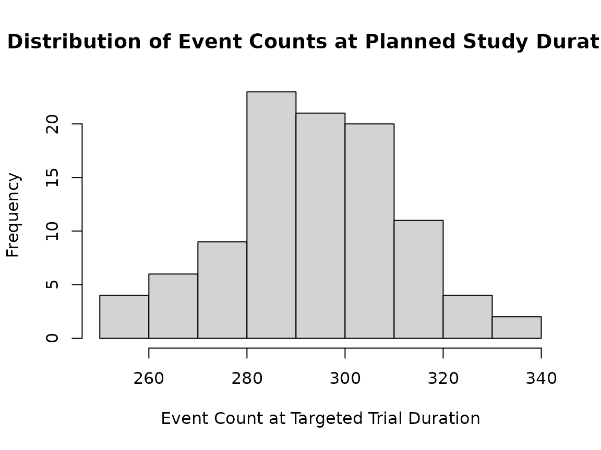

Simulate Fixed Designs with Ease via sim_fixed_n
Yujie Zhao and Keaven Anderson
Source:vignettes/sim_fixed_design_simple.Rmd
sim_fixed_design_simple.RmdThe sim_fixed_n() function simulates a two-arm trial
with a single endpoint, accounting for time-varying enrollment, hazard
ratios, and failure and dropout rates.
While there are limitations, there are advantages of calling
sim_fixed_n() directly:
- It is simple, which allows for a single function call to perform an arbitrary number of simulations.
- It automatically implements a parallel computating backend to reduce running time.
- It offers up to 5 options for determining the data cutoff for
analysis through the
timing_typeparameter.
If people are interested in more complicated simulations, please refer to the vignette Custom Fixed Design Simulations: A Tutorial on Writing Code from the Ground Up.
The process for simulating via sim_fixed_n() is outlined
in Steps 1 to 3 below.
Step 1: Define design parameters
To run simulations for a fixed design, several design characteristics may be used. Depending on the data cutoff for analysis option, different inputs may be required. The following lines of code specify an unstratified 2-arm trial with equal randomization. The simulation is repeated 2 times. Enrollment is targeted to last for 12 months at a constant enrollment rate. The median for the control arm is 10 months, with a delayed effect during the first 3 months followed by a hazard ratio of 0.7 thereafter. There is an exponential dropout rate of 0.001 over time.
n_sim <- 100
total_duration <- 36
stratum <- data.frame(stratum = "All", p = 1)
block <- rep(c("experimental", "control"), 2)
enroll_rate <- data.frame(stratum = "All", rate = 12, duration = 500 / 12)
fail_rate <- data.frame(stratum = "All",
duration = c(3, Inf), fail_rate = log(2) / 10,
hr = c(1, 0.6), dropout_rate = 0.001)We specify sample size and targeted event count based on the
fixed_design_ahr() function and the above options. The
following design computes the sample size and targeted event counts for
85% power. In this approach, users can obtain the sample size and
targeted events from the output of x, specifically by using
sample_size <- x$analysis$n and
target_event <- x$analysis$event.
x <- fixed_design_ahr(enroll_rate = enroll_rate, fail_rate = fail_rate,
alpha = 0.025, power = 0.85, ratio = 1,
study_duration = total_duration) |> to_integer()
x |> summary() |> gt() |>
tab_header(title = "Sample Size and Targeted Events Based on AHR Method",
subtitle = "Fixed Design with 85% Power, One-sided 2.5% Type I error") |>
fmt_number(columns = c(4, 5, 7), decimals = 2)| Sample Size and Targeted Events Based on AHR Method | ||||||
| Fixed Design with 85% Power, One-sided 2.5% Type I error | ||||||
| Design | N | Events | Time | Bound | alpha | Power |
|---|---|---|---|---|---|---|
| Average hazard ratio | 516 | 295 | 36.01 | 1.96 | 0.025 | 0.85 |
Now we set the derived targeted sample size, enrollment rate, and event count from the above.
sample_size <- x$analysis$n
target_event <- x$analysis$event
enroll_rate <- x$enroll_rateStep 2: Run sim_fixed_n()
Now that we have set up the design characteristics in Step 1, we can
proceed to run sim_fix_n() for our simulations. This
function automatically utilizes a parallel computing backend, which
helps reduce the running time.
The timing_type specifies one or more of the following
cutoffs for setting the time for analysis:
-
timing_type = 1: The planned study duration. -
timing_type = 2: The time until target event count has been observed. -
timing_type = 3: The planned minimum follow-up period after enrollment completion. -
timing_type = 4: The maximum of planned study duration and time to observe the targeted event count (i.e., usingtiming_type = 1andtiming_type = 2together). -
timing_type = 5: The maximum of time to observe the targeted event count and minimum follow-up following enrollment completion (i.e., usingtiming_type = 2andtiming_type = 3together).
The rho_gamma argument is a data frame containing the
variables rho and gamma, both of which should
be greater than or equal to zero, to specify one Fleming-Harrington
weighted log-rank test per row. For instance, setting
rho = 0 and gamma = 0 yields the standard
unweighted log-rank test, while rho = 0 and gamma = 0.5
provides the weighted Fleming-Harrington (0, 0.5) log-rank test. If you
are interested in tests other than the Fleming-Harrington weighted
log-rank test, please refer to the vignette at “Articles”/“Simulate
fixed/group sequential designs”/“Custom Fixed Design Simulations: A
Tutorial on Writing Code from the Ground Up”.
sim_res <- sim_fixed_n(
n_sim = 2, # only use 2 simulations for initial run
sample_size = sample_size,
block = block,
stratum = stratum,
target_event = target_event,
total_duration = total_duration,
enroll_rate = enroll_rate,
fail_rate = fail_rate,
timing_type = 1:5,
rho_gamma = data.frame(rho = 0, gamma = 0))The output of sim_fixed_n is a data frame with one row
per simulated dataset per cutoff specified in timing_type,
per test statistic specified in rho_gamma. Here we have
just run 2 simulated trials and see how the different cutoffs vary for
the 2 trial instances.
sim_res |>
gt() |>
tab_header("Tests for Each Simulation Result", subtitle = "Logrank Test for Different Analysis Cutoffs") |>
fmt_number(columns = c(4, 5, 7), decimals = 2)| Tests for Each Simulation Result | |||||||||
| Logrank Test for Different Analysis Cutoffs | |||||||||
| method | parameter | estimate | se | z | event | ln_hr | cut | duration | sim |
|---|---|---|---|---|---|---|---|---|---|
| WLR | FH(rho=0, gamma=0) | -31.52010 | 8.38 | 3.76 | 287 | −0.45 | Planned duration | 36.00000 | 1 |
| WLR | FH(rho=0, gamma=0) | -32.12426 | 8.49 | 3.78 | 295 | −0.45 | Targeted events | 36.66316 | 1 |
| WLR | FH(rho=0, gamma=0) | -29.13247 | 8.25 | 3.53 | 278 | −0.43 | Minimum follow-up | 35.20859 | 1 |
| WLR | FH(rho=0, gamma=0) | -32.12426 | 8.49 | 3.78 | 295 | −0.45 | Max(planned duration, event cut) | 36.66316 | 1 |
| WLR | FH(rho=0, gamma=0) | -32.12426 | 8.49 | 3.78 | 295 | −0.45 | Max(min follow-up, event cut) | 36.66316 | 1 |
| WLR | FH(rho=0, gamma=0) | -31.88270 | 8.00 | 3.99 | 268 | −0.50 | Planned duration | 36.00000 | 2 |
| WLR | FH(rho=0, gamma=0) | -38.09785 | 8.40 | 4.54 | 295 | −0.54 | Targeted events | 38.32488 | 2 |
| WLR | FH(rho=0, gamma=0) | -34.29092 | 8.23 | 4.17 | 283 | −0.51 | Minimum follow-up | 37.47843 | 2 |
| WLR | FH(rho=0, gamma=0) | -38.09785 | 8.40 | 4.54 | 295 | −0.54 | Max(planned duration, event cut) | 38.32488 | 2 |
| WLR | FH(rho=0, gamma=0) | -38.09785 | 8.40 | 4.54 | 295 | −0.54 | Max(min follow-up, event cut) | 38.32488 | 2 |
Step 3: Summarize simulations
Now we run 100 simulated trials and summarize the results by how data is cutoff for analysis.
sim_res <- sim_fixed_n(
n_sim = n_sim,
sample_size = sample_size,
block = block, stratum = stratum,
target_event = target_event,
total_duration = total_duration,
enroll_rate = enroll_rate,
fail_rate = fail_rate,
timing_type = 1:5,
rho_gamma = data.frame(rho = 0, gamma = 0))With the 100 simulations provided, users can summarize the simulated power and compare it to the targeted 85% power. All cutoff methods approximate the targeted power well and have a similar average duration and mean number of events.
sim_res |>
group_by(cut) |>
summarize(`Simulated Power` = mean(z > qnorm(1 - 0.025)),
`Mean events` = mean(event),
`Mean duration` = mean(duration)) |>
mutate(`Sample size` = sample_size,
`Targeted events` = target_event) |>
gt() |>
tab_header(title = "Summary of 100 simulations by 5 different analysis cutoff methods",
subtitle = "Tested by logrank") |>
fmt_number(columns = c(2:4), decimals = 2)| Summary of 100 simulations by 5 different analysis cutoff methods | |||||
| Tested by logrank | |||||
| cut | Simulated Power | Mean events | Mean duration | Sample size | Targeted events |
|---|---|---|---|---|---|
| Max(min follow-up, event cut) | 0.85 | 299.35 | 36.39 | 516 | 295 |
| Max(planned duration, event cut) | 0.85 | 301.54 | 36.59 | 516 | 295 |
| Minimum follow-up | 0.84 | 291.57 | 35.78 | 516 | 295 |
| Planned duration | 0.84 | 294.74 | 36.00 | 516 | 295 |
| Targeted events | 0.85 | 295.00 | 36.00 | 516 | 295 |
We can also do things like summarize distribution of event counts at the planned study duration. We can see the event count varies a fair amount.
hist(sim_res$event[sim_res$cut == "Planned duration"],
breaks = 10,
main = "Distribution of Event Counts at Planned Study Duration",
xlab = "Event Count at Targeted Trial Duration")
We also evaluate the distribution of the trial duration when analysis is performed when the targeted events are achieved.